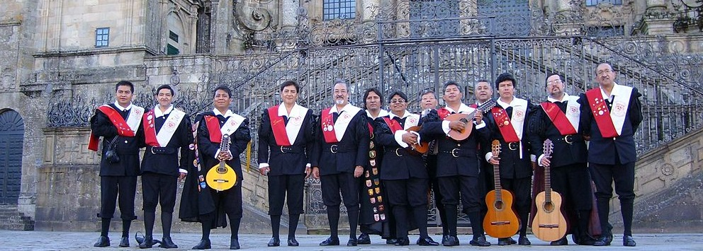

- Jefe de la Paleotuna – el Pato – Rodolfo Ramírez – Mandolina Tricordio
- El Negro – Ricardo Padilla y Sánchez - Guitarra
- El Zorro – Carlos Guerrero Landeros – Guitarra y solista
- La Tortuga – Jorge Piedra Perea – Director musical y bandurria
- El Zopilote – Carlos Apolonio Pérez– Bandurria y arreglista
- El Mosco – Luis Rosas Laurrabaquio – Laúd, Guitarra y solista
- La Hormiga – Andrés Hernández – Bandurria E.P.D.
- Oso Yogui – Oscar Ulloa Lugo – Guitarra
- Don Gato – Víctor Anaya – Guitarra, arreglista y solista
- Pato chico – Enrique Trejo Vázquez – Guitarra
- El Palomo – Héctor Rabadán – Laúd y heraldo
- Scooby Doo – Jesús Arellano – Bandera y pandero
- La Lombriz – Javier González – Contrabajo / Guitarrón
- La Urraca - Armando Guerrero Landeros – Bandurria
- El Ñu – Guillermo García de León – Bandera y pandero
- El Coruco – David Padilla Georgge – Bandurria – Acordeón
- El Plátano – Rubén Polanco – Acordeón
- La Iguana – Edgar Hernández – Pandero
- La Boa – Alberto Rivera Rosado – Guitarra y pandero
- El Pingüino – Héctor Rojas
- El Canguro – Felipe Dámaso – Solistas y guitarra
- El Ganso – Renato - Guitarra
- El Orangután – Odín Apolo Serralde Villar – Guitarra
- El Mantis – Eduardo Fuentes – Bandurria y pandero
